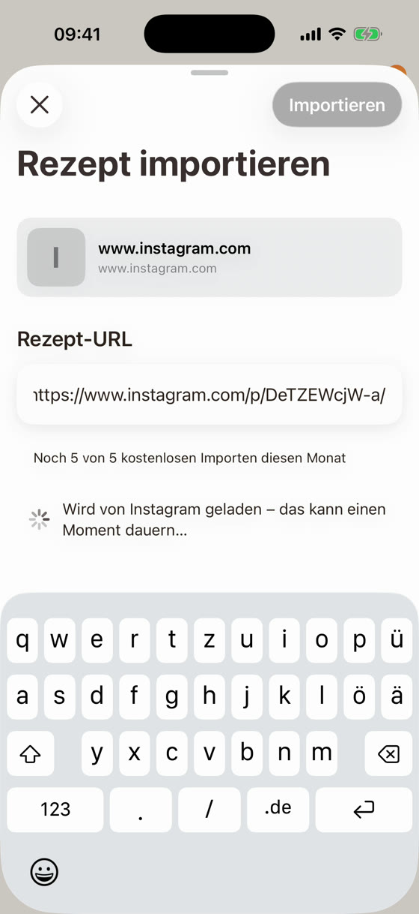
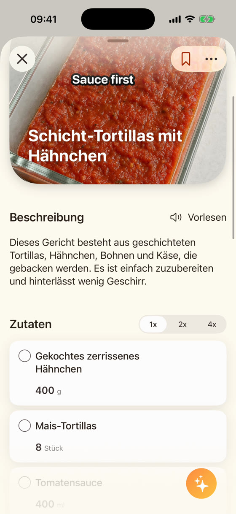

ReciPics
ReciPics
Zutaten aus einem Reel abzuschreiben und dabei ständig das Video anzuhalten, dauert. Importier den Beitrag in ReciPics, und mit einem Tipp landen die Zutaten auf deiner Einkaufsliste, sortiert unter dem Namen des Rezepts.
Im App Store ansehen

Echte Screens aus der App. Beispiel: Beiträge von unseren eigenen Konten @recipics.
Neue Installationen ohne bezahltes Paket haben 5 kostenlose Link-Importe pro Kalendermonat. Es zählen nur Importe, die klappen, und das Import-Fenster zeigt dir, wie viele noch übrig sind.
ReciPics liest Rezepte mit KI, und KI kann sich irren. Vergleiche das Rezept vor dem Kochen mit dem Original, vor allem Mengen und Temperaturen, und prüfe Zutaten bei Allergien oder Unverträglichkeiten selbst.
Mehr zur Liste: Einkaufsliste aus Rezepten · Die Woche planen: Essensplaner
Nicht mit TikTok oder Instagram verbunden. ReciPics wird von TikTok, Instagram, Meta oder ByteDance weder unterstützt noch gesponsert; die Namen beschreiben nur, welche Links die App lesen kann. Rezepte, Bildunterschriften, Videos und Bilder gehören ihren Urhebern. Nutze ReciPics nur für dein privates Kochbuch und veröffentliche importierte Inhalte nicht weiter.
Um einen Beitrag zu lesen, werden der Link und bei Videos Ton und einzelne Bilder an unsere Server und Dienstleister gesendet; siehe Datenschutz.
ReciPics im App Store ladenFür iPhone mit iOS 26 oder neuer.